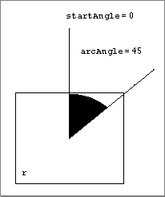

PaintArc
To paint a wedge of the oval that fits inside a rectangle with the graphics pen's pattern and pattern mode, use thePaintArcprocedure.PROCEDURE PaintArc (r:�Rect; startAngle,arcAngle: Integer);
r- The rectangle that defines an oval's boundaries.
startAngle
The angle indicating the start of the arc.arcAngle- The angle indicating the arc's extent.
DESCRIPTION
Using the pen pattern and pattern mode of the current graphics port, thePaintArcprocedure draws a wedge of the oval bounded by the rectangle that you specify in therparameter. As in theFrameArcprocedure described in the previous section and illustrated in Figure 3-21, use thestartAngleandarcAngleparameters to define the arc of the wedge.The pen location does not change.
Figure 3-21 Using
PaintArcto paint a 45 angle
SPECIAL CONSIDERATIONS
ThePaintArcprocedure may move or purge memory blocks in the application heap. Your application should not call this procedure at interrupt time.SEE ALSO
Listing 3-7 on page 3-22 illustrates how to use this procedure.You can use the
FillArcprocedure, described next, to draw a wedge with a pattern different from that specified in thepnPatfield of the current graphics port.